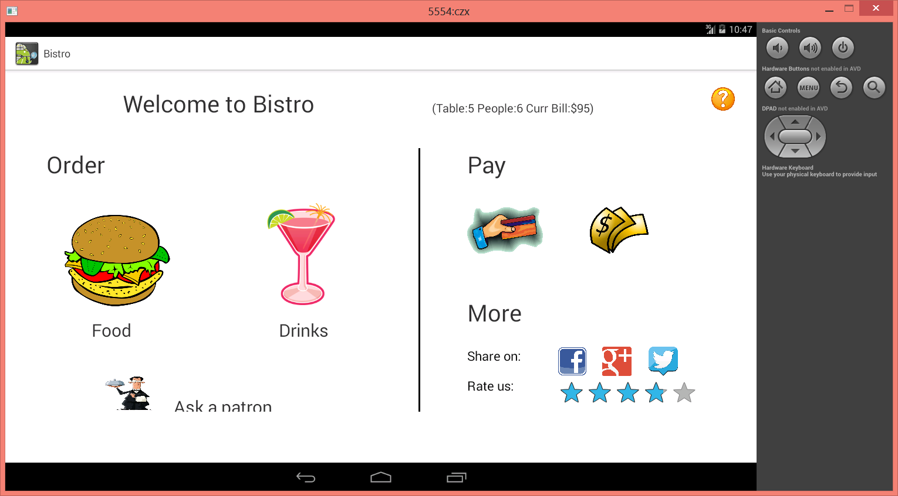

Hello world. I would love to do research on interdisciplinary area because I have a wide range of interests. I enjoy joining team-orientation programs to have more sparks of inspiration with people with the same interest and diverse backgrounds.
Follow me at:
Homework I3
Bistro Order System
Bistro Order System is designed to only work on 10.1in WXGA tablet.
Overview
It has only one interface which is nested under our team project application, as the picture shows below.

Usage:
You must install the .apk file to a android tablet or tablet virtual device on android simulator. Remember the type of tablet is 10.1in WXGA tablet. It is not guaranteed to display properly on other types of tablets.
It is a developing exergame maintained by Shang Ma and me. It has been published to Google Play Store. I am excited to continue to polish the game this semester if possible.
Problem:
People need some momentum to do sports, of course, for example, games. But the reality is that few games are exciting enough to motivate people exercise. With the reality-augmented concept, intensive ways to play the game, conformation with health behavior intervention theory, dedicatedly design game style and the mechanisms to prevent cheating, the app encourages all age groups to exercise and sweat enough in a natural, convenient and interesting manner.
Idea:
The basic idea of this game is that people hold their phones with back-cameras facing to the ground. They will see some bugs crawling in the real-time camera screen, and they can kill these bugs with their feet. That is, to stamp on the specific areas on the floor according to the bugs shown in the screen. We plan to apply OpenGL to add bugs on the screen and computer vision techniques (OpenCV for android) to detect the location of users’ feet (shoes) and also determine if players kill bugs.
Problem:
Lots of programmers work for long time intensively without taking breaks. Sitting too long will cause bone problems. Besides, watching screen for long time is a culprit for near-sight. Efficiency will also be compromised if people don't get refreshed after long time workload.
Idea:
We could design an application(or a plug-in) which monitors how long a person has used the computer since last break. When the user sits in front of the computer for long time, the application will notify him to take a break in a kind and efficient way. There are several ways to detect if the user is using the computer:
1. Front-camera and OpenCV algorithm to see if the user is sitting in front of the screen
2. Implement listeners to keyboard/mouse to record the user's APM (Action Per Minute) 3. Audio analysis
Platform: Windows
Online Diagnosis Game
Problem:
People lack awareness of common illness, which often leads to their misjudgment about their health conditions. For example, you have stomachache but you have no idea if it is due to enteritis or gastritis, whether you should go to see doctor or if it is good for you to continue your dietary. Due to ignorance of common knowledge in illness, a large amount of resources is spent unnecessarily in our society.
Idea:
I would like to create an online diagnosis game where players play as a doctor to diagnose patients who are NPCs (Non-Player Character). Patients will tell you what symptoms they have, which is based on real-world records, and ask you to give diagnosis result. The player, according to what he knows so far, guess a disease the patient has. The game will then show you whether you are right or not and detailed explanation. Through the game, the player will learn common awareness in medicine in a fun and easy way.
Similar concepts have been implemented more or less on mobile apps. But it could be improved in this way: the game will be scaled to MMO(Massive Multiplayer Online) game. Each player manages a virtual hospital and competes for patients. They have to play the game continuously and improve their diagnosis accuracy to draw more patients come.
Platform: Android or Web
(Extra) Intelligent Gym System
Problem:
People would love to know metrics measuring what they achieve every time they go to gym (e.g. how much weight you work out for each equipment). Current gym equipment is not intelligent to collect those measurements. People have to bring their own cellphones with some health apps installed to evaluate their workout. It is often the case that those apps are limited and inaccurate because they could only evaluate roughly how far you run but have no way to collect how much weight you work out on gym equipment.
Idea:
Every piece of gym equipment will be equipped with a screen and a card reader. When people get accessed to the gym, they are given keys for locker room as well as cards recording their identity. When a person comes to use a piece of equipment, he swipes his card on that equipment and starts to use it. The equipment will record metrics under his identity during workout: the value of current weights and how many times/how high weights are lifted, how long he works out, etc. The records are also sent to database on the fly. Those records, once saved in database, could be accessed individually and shared in social networks on users' agreement. It is also feasible that some huge screens are set up in the gym to display special records for competence: e.g. today's champion who lifts the heaviest weight on one piece of equipment. The system could be more intelligent in the way that it tells you how heavy weights you should lift based on what you have worked out today.